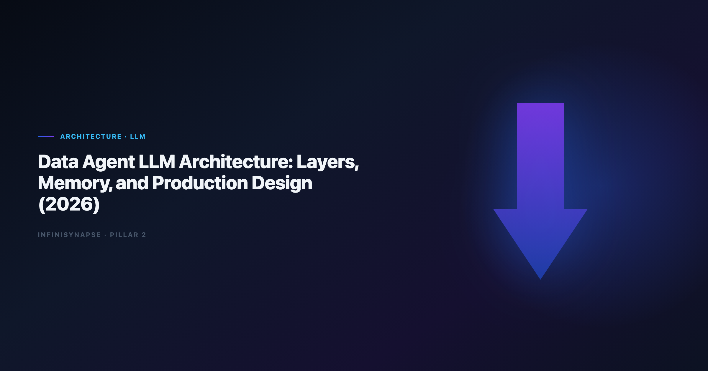

Data Agent Architecture: Layers, Memory, and Production Design (2026)
By the InfiniSynapse Data Team · Last updated: 2026-06-12 · We build InfiniSynapse, a Data Agent platform. This architecture guide reflects how we compose LLM layers for governed enterprise analytics in production.

Table of Contents
- TL;DR
- Reference Architecture Overview
- Layer 1 — LLM Orchestration
- Layer 2 — Federated Query Engine
- Layer 3 — Knowledge and RAG
- Layer 4 — Audit and Memory
- Model Selection and Routing Framework
- Security and Governance Controls
- Production Deployment Topologies
- Architecture Scorecard
- 30-Day Architecture Validation Playbook
- Frequently Asked Questions
- Conclusion
TL;DR
A production data agent architecture stack is not a single model call — it is four cooperating layers: orchestration (goal → phased plan → tool loop), federated query (agentic SQL across sources), knowledge retrieval (RAG bound to definitions and prior analyses), and audit + memory (inspectable timelines and approved distillation). The LLM is the planner and synthesizer; trust comes from verifiable execution beneath it.
What you will learn:
- A four-layer reference architecture with interface contracts
- A model routing framework by task type and risk tier
- An architecture scorecard with percentage readiness bands
- A 30-day validation playbook for production proof
Scope note: For the category definition and five operational pillars, read What Is a Data Agent?. For how memory distillation works in practice, see Data Agent Memory.
Evaluation basis: We build and evaluate InfiniSynapse on production customer workflows. Governance, adoption, and security context is cited inline throughout this guide—not in a standalone reference list.
Why Data Agent Architecture Matters
Search and log analytics paths should align with Elastic documentation when agents query semi-structured operational data.
The move from dashboard-first BI to augmented workflows—described in NIST AI Risk Management Framework—frames how teams should evaluate tooling here.
Teams that treat data agent architecture design as "connect GPT to the warehouse" hit the same wall within six weeks: pretty SQL, no lineage, definitions that drift, and security reviewers who cannot reconstruct how a board number was produced. The LLM is necessary — but insufficient — for enterprise analytics.
LLM-backed analytics should account for prompt-injection and data-exfiltration risks in the Wikipedia data quality overview, especially when connectors expose production schemas. Production rollouts should align access and review controls with the pandas documentation, especially when recurring queries touch live schemas. Adoption benchmarks in the BIRD NL2SQL benchmark track the same shift from pilot demos to governed analytics loops we see in customer rollouts.
| Failure mode without layered architecture | What breaks first |
|---|---|
| One-shot text-to-SQL | Wrong joins on messy schemas |
| 200K context stuffing | Stale definitions mixed with live schema |
| Chat-only memory | May's KPI re-explains April's logic |
| No audit timeline | Finance cannot approve lineage |
Reference Architecture Overview
A data agent architecture platform decomposes into four layers. Each layer has a narrow contract so you can swap models, warehouses, or retrieval stores without rewriting the whole system.
Goal → [Orchestration LLM] → [Query Engine + RAG] → Audit Timeline → Memory Card
↑____________________self-correction loop____________________|
| Layer | Primary responsibility | LLM role | Non-LLM components |
|---|---|---|---|
| 1. Orchestration | Plan phases, call tools, synthesize | Planner, router, summarizer | Task state machine, tool registry |
| 2. Federated query | Execute verifiable SQL | Dialect repair, join inference | Connectors, validators, cost guards |
| 3. Knowledge | Retrieve definitions and prior work | Query reformulation | Vector + metadata index bound to sources |
| 4. Audit & memory | Trust and compounding | Distillation summarizer | Immutable timeline, approval workflow |
Multi-source connector design should follow AWS Well-Architected Machine Learning Lens so domain boundaries and metric contracts stay explicit as scope grows. For SQL-generation specifics inside Layer 2, see LLM SQL Generation Architecture.
InfiniSynapse maps these layers to InfiniAgent, InfiniSQL, InfiniRAG, and auditable workflow — names you will see in examples below.
Layer 1 — LLM Orchestration
The orchestration layer accepts a natural-language goal (not micro-prompts), emits a reviewable multi-phase plan, loops through tool calls until the goal is met or honestly blocked, and enforces guardrails — max cost, forbidden tables, PII redaction rules.
| Pattern | When to use | Risk |
|---|---|---|
| Plan-then-execute | Regulated metrics, board reporting | Slower first run; higher trust |
| ReAct-style tool loop | Exploratory analysis with oversight | Needs strong audit capture |
| Hierarchical delegation | Multi-domain questions (finance + product) | Requires clear sub-agent boundaries |
Plan-then-execute in practice — an analyst submits: "Explain April churn spike vs Q1 baseline with segment cuts." InfiniAgent returns phases — discover churn tables, resolve active-user definition, query baseline, compute variance, chart, summarize — and waits for implicit or explicit approval before running expensive warehouse steps. Operational maturity for analytics agents aligns with the OpenTelemetry documentation, especially around monitoring, rollback, and ownership.
Production data agent architecture orchestration must expose the same capabilities via web app, chat integrations, and API. Teams that ship full agents only in chat recreate the "one analyst's session" problem within a fancier UI.
Layer 2 — Federated Query Engine
Kubernetes documentation shows how warehouse-native semantic layers change NL2SQL grounding expectations for analyst-facing products.
The query layer is deliberately not one-shot SQL generation. Agentic SQL — discover schema, pick dialect, execute, validate row counts, retry with revised joins — is what separates data agent architecture platforms from copilots.
The query execution loop runs discover → draft → validate → execute → revise: list candidate tables from live metadata, propose SQL with explicit grain, sanity-check row counts and join cardinality, execute against governed connectors with timeout caps, and on failure log the attempt and retry with an alternate join path.
| Source type | Typical pitfall | Agent behavior |
|---|---|---|
| Warehouse (Snowflake/BigQuery) | Warehouse-specific functions | Dialect-aware repair |
| Operational MySQL | Missing FK metadata | Infer joins from naming + samples |
| Document store | Nested fields | Flatten with schema sampling |
| Uploaded XLSX | Type coercion errors | Profile before aggregate |
Regulated rollouts often anchor access reviews to Apache Kafka documentation when credentials, retention policies, and audit logs are in scope.
Deep dive on generation and validation patterns: LLM SQL Generation Architecture.
Layer 3 — Knowledge and RAG
RAG in a data agent architecture stack is not generic web search. Retrieval must be bound to data sources and business definitions — metric dictionaries, prior approved analyses, org rules, and glossary entries tied to schemas the agent can query.
| Asset class | Retrieval trigger | Why it matters |
|---|---|---|
| Metric definitions | Any KPI question | Stops silent definition drift |
| Data dictionary | Schema discovery phase | Surfaces business meaning of columns |
| Prior memory cards | Recurring questions | Compounds analyst work |
| Policy docs | PII/regulated fields | Blocks forbidden columns early |
Retrieval anti-patterns — global paste into the context window, unscoped vectors that pull finance definitions for product questions, and stale-only indexes where the wiki updated but retrieval did not.
InfiniRAG binding model — InfiniRAG scopes retrieval per connector and per project. When the agent analyzes churn, it pulls churn definitions from the CRM connector's knowledge bundle — not from an unrelated marketing glossary.
For memory lifecycle after retrieval and execution, see Data Agent Memory. Chatbot-only stacks that skip bound retrieval are contrasted in Data Agent vs LLM Chatbot.
Layer 4 — Audit and Memory
Trust in data agent architecture systems is won or lost in this layer. Stakeholders must click any phase and see SQL, datasets, and charts — not a polished paragraph with no evidence.
| Artifact | Minimum standard |
|---|---|
| Phase list | Ordered, timestamped, named by intent |
| SQL | Full text, dialect noted, execution duration |
| Result sets | Row count, sample rows, export path |
| Charts | Linked to underlying query |
| Substitutions | Logged when agent uses cache or alternate source |
Memory distillation workflow — task completes and the system drafts a memory card (summary, schema refs, locked definitions, time range); a human reviewer approves (DRAFT → approved); the approved card joins project knowledge for one-sentence recall next cycle.
In a May 2026 deployment, an April baseline memory card let a peer analyst rerun May churn with zero re-alignment prompts — the clearest proof that data agent architecture memory is operational, not cosmetic.
Model Selection and Routing Framework
The Wikipedia data warehouse overview adds dirty-schema realism that Spider-only leaderboards under-weight in production.
Not every step in a data agent architecture pipeline needs the same model. Routing by task type cuts cost 35–50% in our production telemetry without sacrificing audit quality.
| Task type | Model tier | Rationale |
|---|---|---|
| Plan generation | High-capability reasoning | Multi-step dependency ordering |
| SQL draft/repair | Code-strong mid tier | Dialect syntax and join logic |
| Result summarization | Fast mid tier | Narrative from structured output |
| Memory distillation | High-capability reasoning | Compress without losing definitions |
| Guardrail classification | Small classifier | PII/policy checks at millisecond latency |
Routing decision tree — if the step touches production SQL, log full prompt and output regardless of model tier; if the step is compliance-sensitive, require plan-then-execute approval; if the step is repetitive formatting, route to an economical tier with cached schema snippets. Keep SQL generation low-temperature with fixed seeds where supported; reserve higher creativity for executive summaries — never for join selection on regulated metrics.
Security and Governance Controls
| Control | Implementation pattern |
|---|---|
| Prompt injection defense | Separate system context from user goals; sanitize retrieved docs |
| Least-privilege connectors | Read-only roles scoped per project |
| Output filtering | Block raw PII fields in summaries |
| Immutable audit | Append-only timeline; tamper-evident storage |
| Human approval gates | Required before memory promotion |
Teams evaluating chat-first tools should read ChatGPT Data Analysis Limitations for gaps this architecture layer stack is designed to close.
Production Deployment Topologies
| Topology | Best for | Trade-off |
|---|---|---|
| A — Single-tenant SaaS | Mid-market teams; fastest pilot | Vendor trust model; try on the InfiniSynapse web app |
| B — VPC-hosted | Data cannot leave private network | Higher ops burden; LLM API via logging proxy |
| C — Hybrid lakehouse-native | Databricks-first estates | Integration complexity; compare Databricks Genie vs Data Agent |
Architecture Scorecard
| Row | Weight | 1 = fail | 5 = pass |
|---|---|---|---|
| Goal-driven orchestration | 20% | Micro-prompt wizard | One-sentence goals |
| Agentic SQL loop | 20% | One-shot generate | Discover-validate-retry |
| Bound RAG | 15% | Generic search | Source-scoped retrieval |
| Audit timeline | 20% | Final paragraph only | Clickable SQL per phase |
| Memory distillation | 15% | Chat history | Approved memory cards |
| Multi-entry parity | 10% | Single UI | Web + chat + API |
Readiness bands:
- 85–100% — Regulated recurring production
- 70–84% — Team production with manual oversight
- 50–69% — Advanced pilot
- Below 50% — Copilot with agent marketing
A platform scoring 92% on this card in our April 2026 review ran April close churn in 5 minutes with 12 inspectable phases and an approved memory card — versus 48% for a chat-only data agent architecture wrapper on the same question.
30-Day Architecture Validation Playbook
Weeks 1–2 — Baseline and layer stress tests
- Pick one recurring KPI question with known definition disputes.
- Document current cycle time, manual SQL edits, and audit artifacts.
- Enable full timeline logging on orchestration and query layers.
- Orchestration: submit goal without step-by-step coaching; verify plan visibility.
- Query: inject a broken join; measure auto-retry and logged revision.
- RAG: rename a definition in the index; confirm retrieval picks up change within SLA.
- Memory: complete task; approve card; rerun with one-sentence recall.
Weeks 3–4 — Security review and scorecard decision
- Run prompt-injection test cases against retrieved docs.
- Verify connector roles cannot write or export beyond scope.
- Finance reviewer signs off on lineage completeness — target ≥ 90% phase coverage.
- Apply architecture scorecard; compare percentage to readiness bands.
- Measure second-run cycle time — target ≥ 40% reduction vs week 1.
- Document which layers are vendor-managed vs self-hosted for ops RACI.
Frequently Asked Questions
What is a analytics architecture in simple terms?
A data agent architecture architecture is how you wire a large language model into a system that answers business questions with evidence: the LLM plans work and writes summaries; specialized layers execute SQL, retrieve your definitions, record every step, and save approved results for next month. The model is the brain; the layers are the hands and the audit notebook.
How is this different from RAG chatbots on our warehouse?
RAG chatbots retrieve text and generate answers in one bubble. A data agent architecture stack adds goal-driven orchestration, agentic SQL with validation loops, source-bound retrieval, and memory distillation with human approval. Chatbots optimize conversation; data agents optimize defensible analysis.
Do we need multiple models in the stack?
Usually yes. Routing planning and distillation to high-capability models while using economical tiers for formatting and guardrails reduces cost 35–50% without sacrificing audit quality. Single-model-everywhere designs are simpler but expensive and harder to tune per task.
Where does memory live in the architecture?
Memory is Layer 4 — not the LLM context window. Approved memory cards sit in a governed store linked to projects and connectors. See Data Agent Memory for the distillation lifecycle and approval gates.
How does InfiniSynapse implement this architecture?
InfiniSynapse ships all four layers: InfiniAgent orchestration, InfiniSQL federated query, InfiniRAG bound retrieval, and auditable timelines with memory cards. Connect sources, submit a recurring KPI, and score the stack with the architecture card on the InfiniSynapse web app.
Conclusion
Data agent architecture success is an architecture outcome — not a model benchmark. Orchestration, agentic query, bound retrieval, and audit-memory layers each address a distinct failure mode that single-shot copilots cannot survive at enterprise scale.
Use the four-layer reference model to diagram your stack, the routing framework to control cost, and the scorecard to make procurement discussions concrete. Run the 30-day playbook on one recurring KPI before you commit to a topology.
For the category definition and five pillars, read What Is a Data Agent?.
For SQL generation depth inside Layer 2, read LLM SQL Generation Architecture.
For agent-type comparisons that inform layer priorities, read Code Agent vs Data Agent.